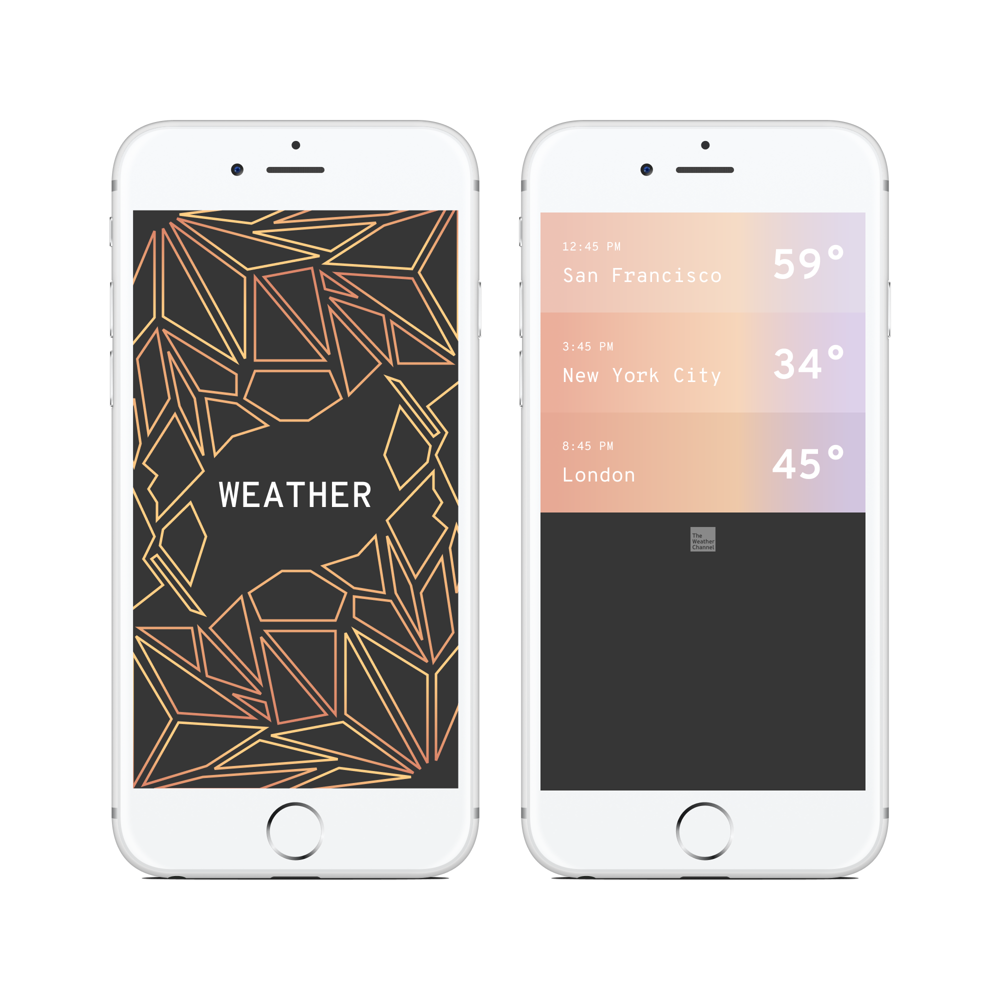
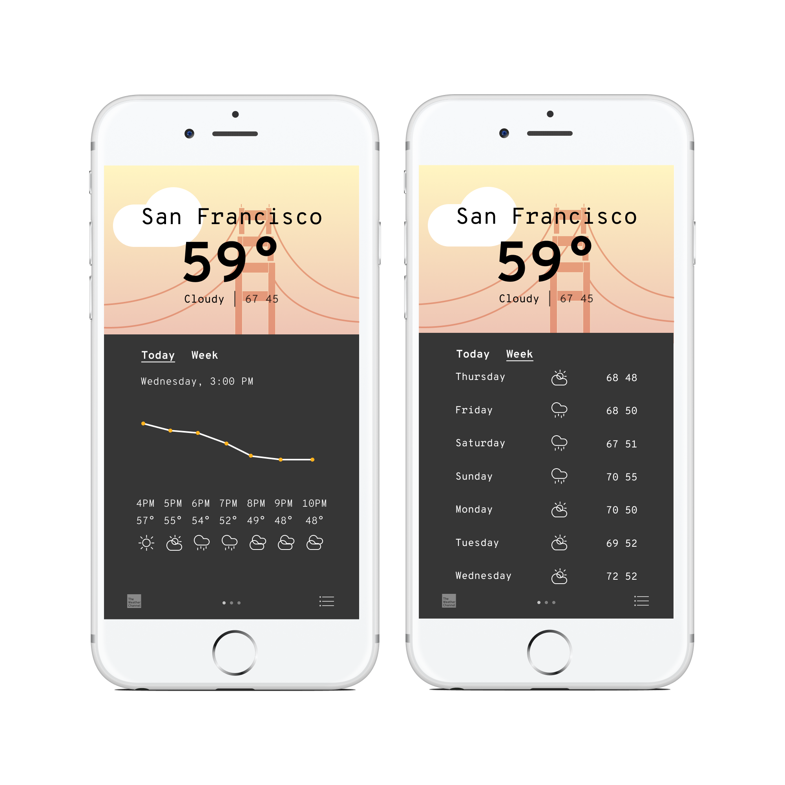

Unlike many other weather apps, the ios weather app does not overwhelm the user with unnecessary information. However, it also doesn't prepare its user for temperature changes throughout the day - a feature that is critical for those who spend long hours outside the house. I redesigned the ios weather app to better suit such need.
Read Case Study

